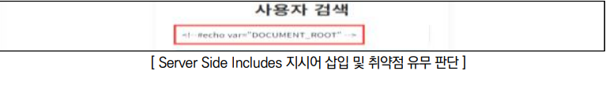
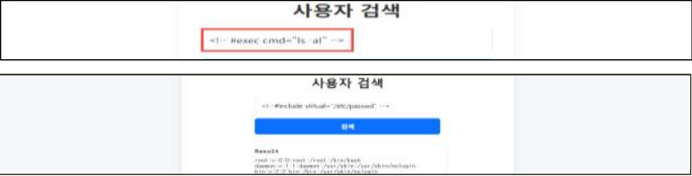
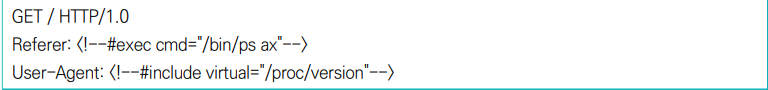
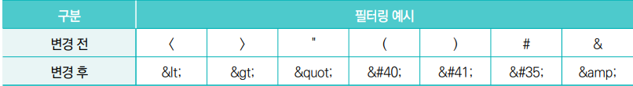

SSI injection이란?
- 웹 애플리케이션이 사용자로부터 입력받은 데이터를 적절한 검증 없이 HTML 페이지에 포함할 때 발생하는 삽입 공격 취약점
- 공격자가 HTML 코드 안에 SSI 지시어를 삽입하여 서버 측에서 임의의 코드를 실행하거나, 민감한 파일에 접근하는 것이 핵심입니다.
- 점검 방법
Step 1) 사용자가 입력 가능한 파라미터 값에 를 삽입하여 전송 후 반환되는 페이지에 사이트의 홈 디렉터리가 표시되는지 확인

Step 2) 사용자가 입력 가능한 파라미터 값에 를 삽입하여 전송 후 반환되는 페이지에 디렉터리의 파일 리스트가 표시되는지 확인

Step 3) HTTP 요청(Request) 헤더에 명령어를 삽입하여 실행되는지 확인

조치 방법
1. 화이트리스트 방식으로 사용자 입력에 대한 사용 가능한 문자들을 정의하여 정해진 문자를 제외한 나머지 모든 문자들을 필터링 처리
2. 필터링해야 하는 대상은 GET 질의 문자열, POST 데이터, 쿠키, URL, 그리고 일반적으로 브라우저와 웹 서버가 주고받는 모든 데이터를 포함하며, 아래는 특수문자에 대한 엔티티 형태를 표시한 것임
3. 웹 서버의 SSI 기능을 사용하지 않거나, 웹 방화벽에 특수문자를 필터링하도록 룰셋 적용
